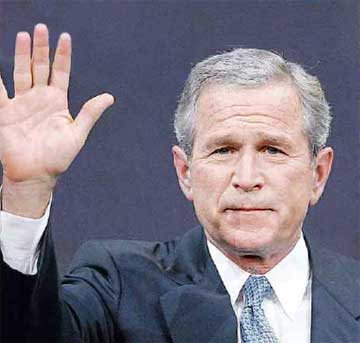

|

God help America
If this is the finest democracy in the world, does it really deserve George W. Bush?
- - - - - - - - - -
by The Daily Mirror
"As democracy is perfected, the office of president represents, more and more closely, the inner soul of the people. On some great and glorious day the plain folks of the land will reach their heart's desire at last and the White House will be adorned by a downright moron."
- H.L. Mencken (1880 - 1956)
 HEY SAY THAT IN LIFE you get what you deserve. Well, today
America
has deservedly got a lawless cowboy to lead them further into carnage and isolation and the unreserved contempt of most of the rest of the world. This once-great country has pulled up its drawbridge for another four years and stuck a finger up to the billions of us forced to share the same air. And in doing so, it has shown itself to be a fearful, backward-looking and very small nation. HEY SAY THAT IN LIFE you get what you deserve. Well, today
America
has deservedly got a lawless cowboy to lead them further into carnage and isolation and the unreserved contempt of most of the rest of the world. This once-great country has pulled up its drawbridge for another four years and stuck a finger up to the billions of us forced to share the same air. And in doing so, it has shown itself to be a fearful, backward-looking and very small nation.
This should have been the day when Americans finally answered their critics by raising their eyes from their own sidewalks and looking outward towards the rest of humanity. And for a few hours early yesterday, when the exit polls predicted a John Kerry victory, it seemed they had. But then the horrible, inevitable truth hit home. They had somehow managed to re-elect the most devious, blinkered and reckless leader ever put before them. The Yellow Rogue of
Texas
. A self-serving, dim-witted, draft-dodging, gung-ho little rich boy, whose idea of courage is to yell: "I feel good," as he unleashes an awesome fury which slaughters 100,000 innocents for no other reason than greed and vanity. A dangerous chameleon, his charming exterior provides cover for a power-crazed clique of Doctor Strangeloves whose goal is to increase
America
's grip on the world's economies and natural resources.
And in foolishly backing him, Americans have given the go-ahead for more unilateral pre-emptive strikes, more world instability and most probably another 9/11. Why else do you think bin Laden was so happy to scare them to the polls, then made no attempt to scupper the outcome? There's only one headline in town today, folks: "It Was Osama Wot Won It." And soon he'll expect pay-back. Well, he can't allow Bush to have his folks whoopin' and a-hollerin' without his own getting a share of the fun, can he? Heck, guys, I hope you're feeling proud today. To the tens of millions who voted for John Kerry, my commiserations. To the overwhelming majority of you who didn't, I simply ask: Have you learnt nothing? Do you despise your own image that much? Do you care so little about the world beyond your shores? How could you do this to yourselves? How appalling must one man's record at home and abroad be for you to reject him?
Kerry wasn't the best presidential candidate the Democrats have ever fielded (and he did deserve a kicking for that "reporting for doo-dee" moment), but at least he understood the complexity of the world outside
America
, and domestic disgraces like the 45 million of his fellow citizens without health cover. He would have done something to make that country fairer and re-connected it with the wider world.
Instead
America
chose a man without morals or vision. An economic incompetent who inherited a $2billion surplus from
Clinton
, gave it in tax cuts to the rich and turned the
US
into the world's largest debtor nation. A man who sneers at the rights of other nations. Who has withdrawn from international treaties on the environment and chemical weapons. A man who flattens sovereign states then hands the rebuilding contracts to his own billionaire party backers. A man who promotes trade protectionism and backs an Israeli government which continually flouts UN resolutions.
America has chosen a menacingly immature buffoon who likened the pursuit of the 9/11 terrorists to a Wild West, Wanted Dead or Alive man-hunt and, during the Afghanistan war, kept a baseball scorecard in his drawer, notching up hits when news came through of enemy deaths. A RADICAL Christian fanatic who decided the world was made up of the forces of good and evil, who invented a war on terror, and thus as author of it, believed he had the right to set the rules of engagement. Which translates to telling his troops to do what the hell they want to the bad guys. As he has at
Guantanamo
, Abu Ghraib and countless towns across
Iraq
.
You have to feel sorry for the millions of Yanks in the big cities like
New York
,
Washington
,
Boston
,
Chicago
,
Los Angeles
and
San Francisco
who voted to kick him out. These are the sophisticated side of the electorate who recognise a gibbon when they see one. As for the ones who put him in, across the Bible Belt and the South, us outsiders can only feel pity. Were I a Kerry voter, though, I'd feel deep anger, not only at them returning Bush to power, but for allowing the outside world to lump us all into the same category of moronic muppets. The self-righteous, gun-totin', military lovin', sister marryin', abortion-hatin', gay-loathin', foreigner-despisin', non-passport ownin' red-necks, who believe God gave America the biggest dick in the world so it could urinate on the rest of us and make their land "free and strong".
You probably won't be surprised to learn of would-be Oklahoma Republican Senator Tom Coburn who, on Tuesday, promised to ban abortion and execute any doctors who carried them out. He also told voters that lesbianism is so rampant in the state's schools that girls were being sent to toilets on their own. Not that any principal could be found to back him up. These are the people who hijack the word patriot and liken compassion to child-molesting. And they are unknowingly bin Laden's chief recruiting officers.
Al-Qaeda's existence is fuelled by the outpourings of
America
's Christian right. Bush is its commander-in-chief. And he and bin Laden need each other to survive. Both need to play Lex Luther to each others' Superman with their own fanatical people. Maybe that's why the mightiest military machine ever assembled has failed to catch the world's most wanted man.
Or is the reason simply that
America
is incompetent? That behind the bluff they are frightened and clueless, which is why they've stayed with the devil they know. VISITORS from another planet watching this election would surely not credit the amateurism. The queues for hours to register a tick; the 17,000 lawyers needed to ensure there was no cheating; the $1.2bn wasted by parties trying to discredit the enemy; the allegations of fraud, intimidation and dirty tricks; the exit polls which were so wildly inaccurate; an Electoral College voting system that makes the Eurovision Song Contest look like a beacon of democracy and efficiency; and the delays and the legal wrangles in announcing the victor.
Yet
America
would have us believe theirs is the finest democracy in the world. Well, that fine democracy has got the man it deserved. George W Bush.
But is
America
safer today without Kerry in charge? A man who overnight would have given back to the UN some credibility and authority. Who would have worked out the best way to undo the
Iraq
mess without fear of losing face. Instead, the questions facing
America
today are - how many more thousands of their sons will die as
Iraq
descends into a new
Vietnam
? And how many more
Vietnams
are on the horizon now they have given Bush the mandate to go after
Iran
,
Syria
,
North Korea
or
Cuba
...?
Today is a sad day for the world, but it's even sadder for the millions of intelligent Americans embarrassed by a gung-ho leader and backed by a banal electorate, half of whom still believe Saddam Hussein was behind 9/11. Yanks had the chance to show the world a better way this week, instead they made a thuggish cowboy ride off into the sunset bathed in glory. And in doing so it brought Armageddon that little bit closer and re-christened their beloved nation The Home Of The Knave and the
Land
Of
The Freak
.
God Help
America
.
Reprinted from The Daily Mirror

|